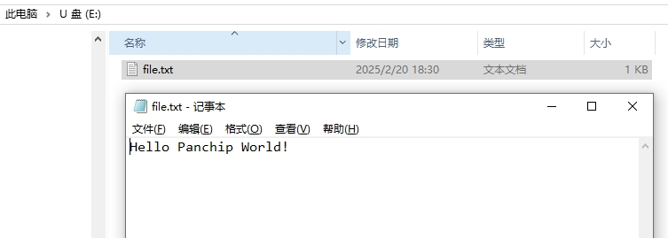
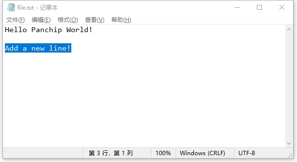
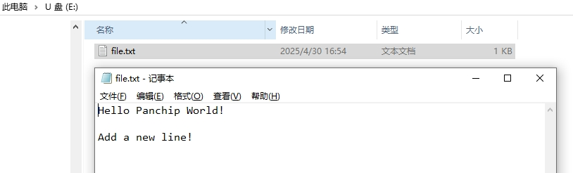

USBD MSC Flash Disk¶
1 功能概述¶
本例程演示 CherryUSB 组件的 MSC Flash Disk Device（大容量存储设备 - Flash 虚拟 U 盘）的基本功能与使用方法。
2 环境准备¶
硬件设备与线材：
PAN107X EVB 核心板与底板各一块
JLink 仿真器（用于烧录例程程序）
USB-TypeC 线一条（用于底板供电和查看串口打印 Log）
杜邦线数根或跳线帽数个（用于连接各个硬件设备）
硬件接线：
将 EVB 核心板插到底板上
使用 USB-TypeC 线，将 PC USB 插口与 EVB 底板 USB->UART 插口相连
使用杜邦线将 EVB 底板上的 TX 引脚接至核心板 P16，RX 引脚接至核心板 P17
使用杜邦线将 JLink 仿真器的：
SWD_CLK 引脚与 EVB 底板的 P00 排针相连
SWD_DAT 引脚与 EVB 底板的 P01 排针相连
SWD_GND 引脚与 EVB 底板的 GND 排针相连
使用跳线帽将 EVB 底板的：
USB+ 排针与 P14 排针相连
USB- 排针与 P13 排针相连
PC 软件:
串口调试助手（UartAssist）或终端工具（SecureCRT），波特率 921600（用于接收串口打印 Log）
3 编译和烧录¶
例程位置：<PAN10XX-NDK>\01_SDK\nimble\samples\component\usbd_msc_flash_disk\keil_107x
双击 Keil Project 文件打开工程进行编译烧录。
4 例程演示说明¶
烧录完成后，芯片会通过串口打印例程初始化 Log：
Try to load HW calibration data.. DONE. - Chip Info : 0x61 - Chip CP Version : 255 - Chip FT Version : 7 - Chip MAC Address : E11000014DE5 - Chip UID : B90801465454455354 - Chip Flash UID : 4250315A3538380B01FD8B435603EF78 - Chip Flash Size : 512 KB (Inc. 4KB Panchip Info Area) - Current Flash Map : +-------------------------+ <- Addr: 0x00000 | App Partition | | (220 KB) | +-------------------------+ <- Addr: 0x37000 | KVStore Partition | | ( 16 KB) | +-------------------------+ <- Addr: 0x3B000 | User Custom Partition | | (272 KB) | +-------------------------+ <- Addr: 0x7F000 | Panchip Info Area | | (4 KB, Hidden) | +-------------------------+ <- End : 0x80000 (512 KB) [I] App started.. [I] Try to mount file system.. [W] File system does not exist, formatting.. [I] File system formatting completed, remounting file system.. [I] Try to open file.. [W] File does not exist, try to create one.. [I] Try to write data to the created file.. [I] Close the opened file.. [I] Try to open the created file again.. [I] Try to read data from the opened file.. [I] File reading successfully, content: Hello Panchip World! [I] Close the opened file.. [I] Try to unmount file system.. [I] USBD_EVENT_INIT
由 Log 可知，App 初始化阶段：
先在 Flash 中初始化了一个 FAT 文件系统，并在其中创建了一个文本文件，写入了一个字符串
Hello Panchip World!然后初始化了 USB Device，但因为当前 USB 未插入，因此 PC 还未识别 U 盘
使用 USB-TypeC 线，将 PC USB 插口与 EVB 底板的 USB 插口相连
可以看到 PC 文件资源管理器中多了一个U盘盘符，点击进入后可看到其中已经有一个名为
file.txt的文件，文件内容与预先写入的字符串一致：
打开 Flash 虚拟 U 盘中预先保存的文件¶
在
file.txt文件中新增一行字符串，然后保存并关闭此文件：
修改 Flash 虚拟 U 盘中预先保存的文件内容¶
按 EVB 板的 Reset 键复位芯片，观察 USB 重新枚举成功，重新打开
file.txt，可以看到芯片复位前保存到 Flash 中的内容仍然存在：
检查 Flash 虚拟 U 盘修改后的文件内容是否丢失¶
5 开发者说明¶
本例程中将 SoC 的 User Custom Flash 分区扩大为 272KB，并将其用作默认的虚拟 U 盘数据存储区（从前一小节系统初始化 Log 中的 Flash Map 图中也可看出此分区大小）
此区域在使用 Keil 烧录程序的时候是不会碰到的，若希望擦除此区域，则应使用 Keil 的 Flash - Erase 菜单进行 SoC Flash 全擦操作。
本例程在初始化 USB 之前，先初始化了 FatFs 文件系统，因此当 USB 插入 PC 后，不会再提示需要格式化，原因是 PC 识别到当前 U 盘存储区中已经存在可用的文件系统
本例程还提供了使用外部 SPI Flash 作为 U 盘存储区域的功能，若希望测试此功能，则需：
将本例程
sdk_config.h配置中的 Application Config - Use External SPI Flash for USB Storage 选项勾上此功能会使用到 SFUD 组件，请参考 Serial Flash Universal Driver 例程说明，确认此例程可以执行成功（注意 EVB 底板上有对应的 Flash 跳线帽需要接）
然后编译烧录修改后的本例程，即可看到 U 盘数据存储区变为了 EVB 底板上的外部 SPI Flash。